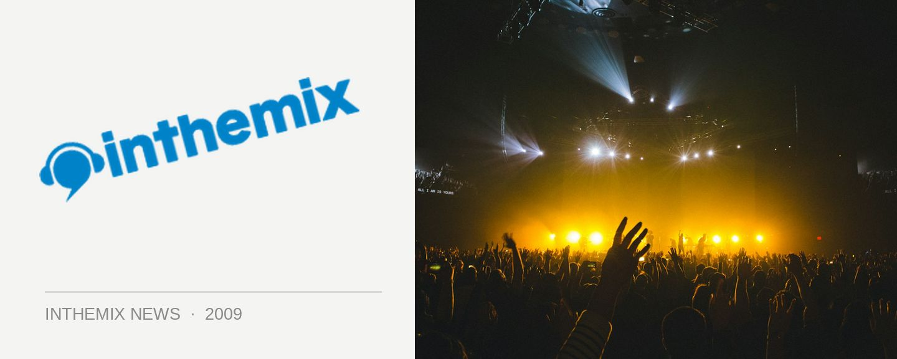

Parklife on sale midday Thursday
Credit cards at the ready people… Fuzzy’s annual Parklife tour has cemented itself as one of our favourites on the festival calendar, and on Thursday 25th June at midday it will be on sale to the general public across the nation. Want to make sure you’re there? Then make sure you’ve got it penciled in your diary, and have parklife.com.au bookmarked in your internet browser.
The Parklife lineup dropped earlier this month, and it was certainly a good one. Arguably one of Fuzzy’s best yet, it’s the perfect balance of the new and cutting-edge with tried-and-tested favourites, and it’ll give us plenty to look forward to over the cold winter months. Stay tuned to ITM, as we’ll be bringing loads of up-to-date coverage in the leadup to the tour beginning in late September.
CHECK OUT OUR PARKLIFE LINEUP SHOWCASE GALLERY!
Parklife is on sale from midday on Thursday 24th June from parklife.com.au. Check out the national tour dates below…
Sat 26th Sep – Botanic Gardens & Riverstage, Brisbane
Sun 27th Sep – Wellington Square, Perth
Sat 3rd Oct – Birrarung Marr, Melbourne
Sun 4th Oct – Kippax Lake, Moore Park, Sydney
Mon 5th Oct – Botanic Park, Adelaide
inthemix is a proud presenting partner of Parklife in 2009! Keep your eyes peeled to our Festival Page at inthemix.com.au/parklife